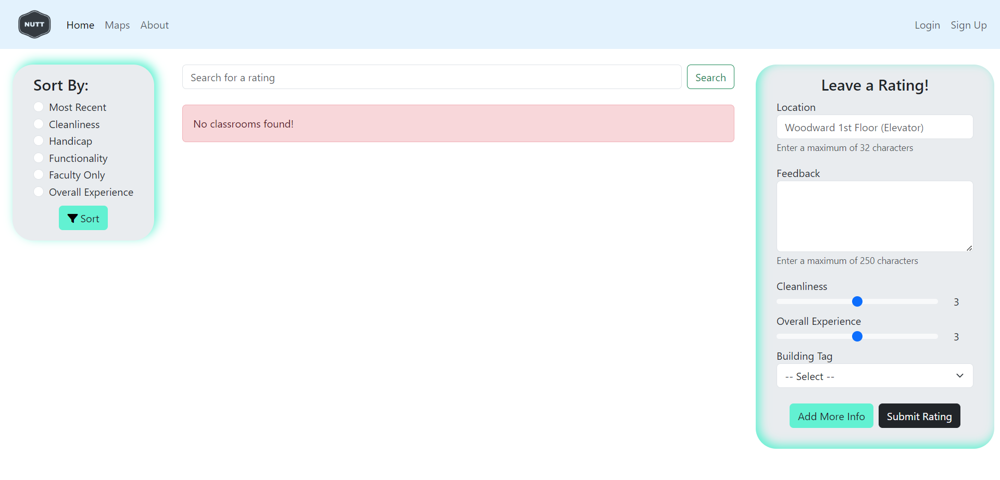

Niners United Classroom Tracker
Niners United Classroom Tracker is a web application developed to allow UNC Charlotte students to review and rate classrooms on campus, helping others find the closest and most useful facilities.
Technologies Used: Python, JavaScript, Flask, PostgreSQL, HTML/CSS, SQLAlchemy